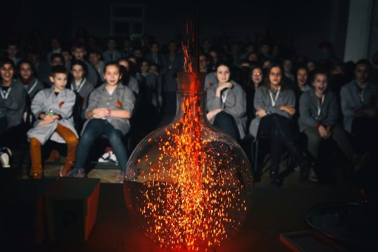
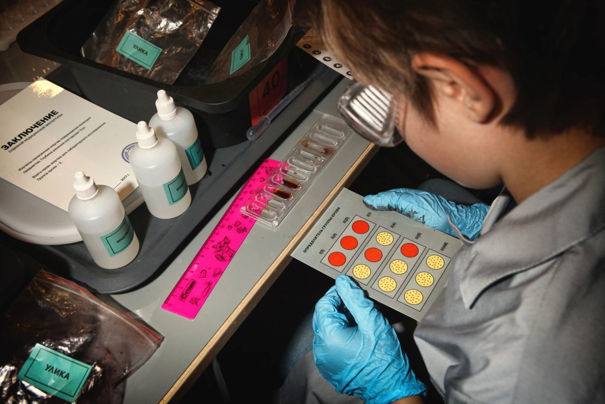

О проекте Умные Города
 Проект "Умные Города" был создан в 2013 году группой выпускников естественно-научных факультетов МГУ им. М.В. Ломоносова и строится на основе программ нестандартных интерактивных занятий, органично дополняющих школьные образовательные программы и позволяющих усилить интерес и мотивацию детей к осознанному и более глубокому освоению школьных предметов. Сейчас уже проект «Умные города» успешно реализуется в более чем 30-ти городах России и зарубежья.

Мы проводим интерактивные программы по естественным наукам для детей 7-14 лет и их родителей. Каждая программа представляет собой краткий курс знаний по какому-либо из разделов химии, физики, биологии, медицины и других наук.
Как проходят наши программы
На программе мы оборудуем 4 разных лаборатории, в каждой из которых дети проводят разнообразные опыты. Время пребывания в одной лабораторий составляет 20 минут — этого хватает для усвоения теории и проведения экспериментов.
В это время родители заняты на отдельной “взрослой” программе — это интерактивная лекция-викторина, тема которой совпадает с темой детской программы. А после программы каждый участник забирает домой домашнее задание — набор опытов для домашнего выполнения.
Главные особенности
-
ИНТЕРАКТИВНОСТЬ
На наш взгляд, дети лучше всего воспринимают естественные науки именно в процессе проведения экспериментов. Один раз самостоятельно проведя хирургическую операцию (на манекене, конечно), ребёнок может узнать о строении человеческого тела больше, чем из цикла лекций по анатомии. -
НАУЧНОСТЬ
Мы не считаем наукой бросание сухого льда в воду, громкие взрывы и опыты с ярким горением чего бы то ни было. В наших программах всё по-настоящему — от экспериментов по генетике с участием мух-дрозофил до химических синтезов сложных эфиров. А наши ведущие — это не аниматоры, а студенты и выпускники профильных факультетов ведущих вузов России. -
ОРИГИНАЛЬНОСТЬ
Мы никогда не используем “классические” опыты, которые десятилетиями кочуют из одного детского “шоу” в другое. В нашем отделе разработки постоянно идёт работа по придумываю и реализации новых идей. Вряд ли вы сможете где-то ещё увидеть то, что делают дети на наших программах. -
РАЗНООБРАЗИЕ
Каждый месяц мы презентуем совершенно новую программу. Это делается для того, чтобы вы могли ходить к нам регулярно. За год-два у ребенка сформируется действительно целостная научная картина мира. -
ДОМАШНЕЕ ЗАДАНИЕ
С каждой программы ребёнок уносит домой практическое домашнее задание, чтобы иметь возможность продолжить опыты в удобное время. А ещё мы по теме каждой программы делаем подборки самых полезных материалов для самостоятельного изучения. -
НОВЫЕ ТЕХНОЛОГИИ
На наших программах мы по-максимуму используем достижения современной педагогики - квестовые и игровые механики, гаджеты и мультимедийное оборудование. -
ПРОГРАММА ДЛЯ РОДИТЕЛЕЙ
Ребёнок берёт с вас пример во всем. Поэтому мы всегда делаем отдельную программу для родителей, где вы сможете получить новые знания и задуматься - но при этом также посмеяться и хорошо провести время.